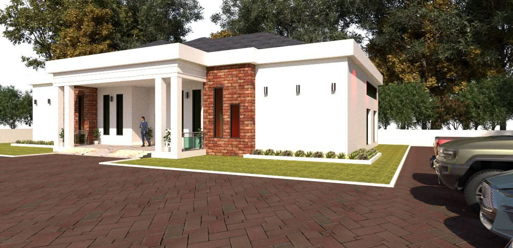
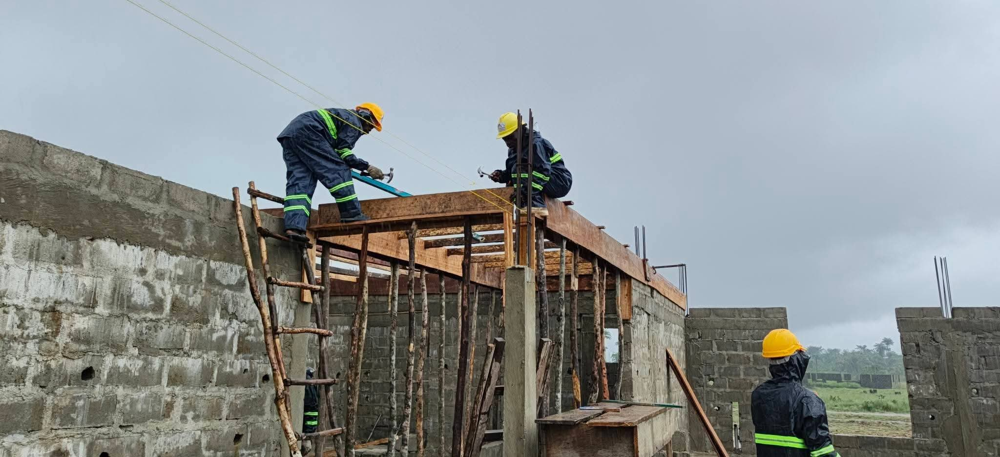
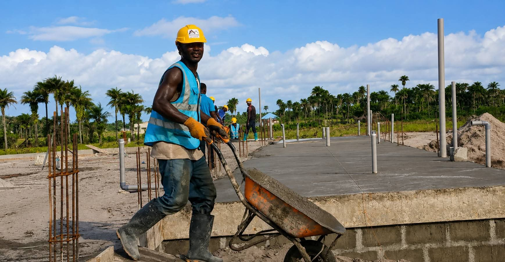
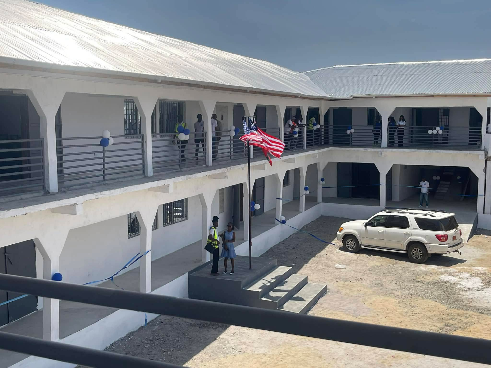
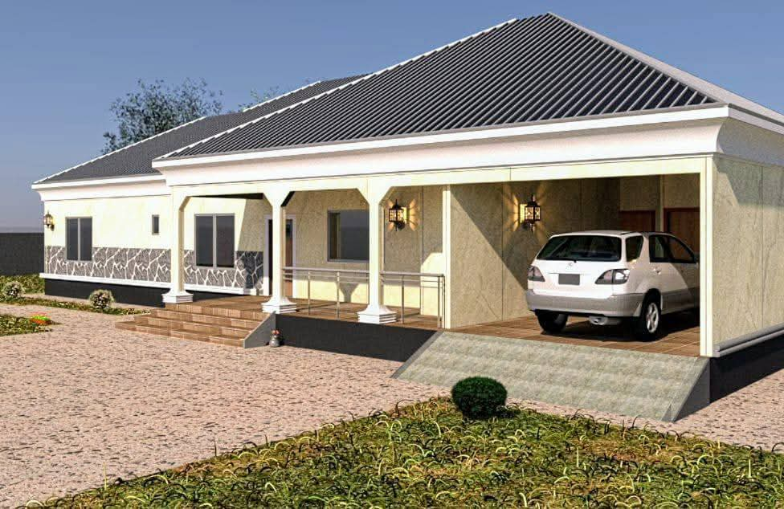

Residential design
Modern multi-level home
A contemporary home design featuring generous windows, a balcony, and welcoming outdoor spaces.
Built with care. Made to last.
Explore a selection of residential designs and building work associated with Grace Construction. The gallery includes design renderings as well as photos from construction sites, giving you a look at different stages of our work.
Residential design
A contemporary home design featuring generous windows, a balcony, and welcoming outdoor spaces.

Residential design
A clean, modern exterior combining light finishes with a distinctive brick feature.

On-site construction
Workers assemble the structure above the block walls as construction moves forward.

On-site construction
A site photo showing a poured concrete slab and preparations for the next stage of building.

Institutional building
A wide exterior view of a two-storey building with open walkways and covered corridors.

Residential design
A single-storey home design with a covered entrance, front porch, and integrated carport.
Have a project in mind?
Talk with our team about your plans, ideas, and construction needs.